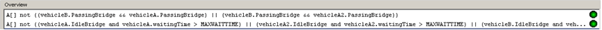
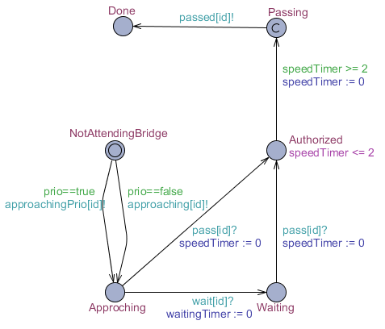

Description générale
Dans cette section, une description générale du projet sera proposé. Deux versions du système y seront décrites avec dans chacune d'elle les états, le code et les vérifications.
Le projet si présent vise à faire la gestion d'un pont à l'aide de véhicules autonomes qui veulent traverser un pont à voie unique. La modélisation de ce système se fera à l'aide d'automates temporisés et une vérification complète du système devra être faite à l'aide de la logique CTL. Voici une image permettant de mieux visualiser le problème et qui est tiré de l'énoncé du laboratoire fait par Sylvie Ratté. Le tout devra être fait avec UPPAAL.
Première partie
Modélisation des composants VAA et VAB
Dans le modèle présent, la voiture automatisée joue un rôle très important, car ils ont une certaine autonomie à ce qui a trait à se rendre sur le pont. En effet, lorsque l’on regarde le modèle, en prenant un véhicule VAA par exemple, il est responsable de demander au contrôleur du pont s’il est en mesure de pouvoir traverser le pont. Il va donc traverser le pont s’il obtient l’autorisation du pont. De plus, en regardant le modèle, il devrait, techniquement parlant, simplement aller à l’état « End » lorsqu’il a fini de traverser le pont. Cependant, afin de pouvoir simuler un grand nombre de véhicules, il boucle quelques fois en revenant à l’état « ApprochingBridge ». De cette façon, il est plus facile de pouvoir simuler un nombre multiple de véhicules qui passent et qui repassent.
VAA

VAB
Explications
La grande différence entre les deux modèles vient du fait qu’ils n’ont pas les mêmes requêtes. Le véhicule A fait des requêtes pour entrer sur le pont par l’entrée A, alors que le véhicule B par l’entrée B. Mise à part cette différence, il n’y a aucun changement au modèle.
Les états possibles pour chaque véhicule automatisé sont les suivants :
- Off : Le véhicule ne fonctionne pas.
- ApprochingBridge : Le véhicule s’approche du pont.
- IdleBridge : Le véhicule est arrivé au pont, il demande au contrôleur du pont s’il peut passer. Il vérifie périodiquement s’il peut passer sur le pont. Il faut que le véhicule ne reste pas en attente plus de 200 unités de temps.
- PassingBridge : Le véhicule est sur le pont. Il faut que le véhicule ait franchi le pont sous 20 unités de temps.
- PassedBridge : Le véhicule a traversé le pont.
- End : Le véhicule a terminé son travail.
Fonctions du modèle :
void resetCar() {
canPass := false;
requestAsked := false;
passed++;
}
void resetRequest() {
requestAsked := false;
requestTime := 0;
}
void startRequest() {
requestAsked := true;
waitingTime := 0;
requestTime := 0;
}
Modélisation du composant P
Dans la modélisation présente, le composant P n’existe pas, car le pont n’a aucune intelligence étant donné qu’il s’agit que du matériel. Étant donné qu’il n’y a pas d’intelligence sur ce composant, le pont est entièrement pris en charge par le contrôleur du pont, soit le CTRLP.
Modélisation du composant P
Le CTRLP est le cerveau du pont, car il permet d’être le policier qui dirige la circulation. Il ne fait que contrôler le flux du pont en acceptant ou en refusant les demandent pour traverser le pont. Étant donné qu’il agit comme un simple contrôleur, il ne maintient pas en mémoire les demandes des véhicules, car cette responsabilité provient des véhicules. En considérant ceci, lorsqu’il permet l’accès à un véhicule dans une direction, il ouvre la porte pour cette direction laissant passer les véhicules dans ce sens durant 20 unités de temps.
Les états possibles du CTRLP :
- WaitingRequest : L’état où le contrôleur attend une requête.
- FirstRequest : Le contrôleur traite la première requête reçue depuis qu’il est en attente d’une requête. Il redirige tout de suite vers l’acceptation d’une requête pour commencer une traversée.
- AcceptingA : Le contrôleur accepte une requête provenant d’un véhicule à l’entrée A. Il redirige tout de suite vers l’état de véhicule provenant de l’entrée A.
- AcceptingB : Le contrôleur accepte une requête provenant d’un véhicule à l’entrée B. Il redirige tout de suite vers l’état de véhicule provenant de l’entrée B.
- VehicleFromA : Le contrôleur prend une décision sur les requêtes selon la direction A vers B. Il offre une fenêtre de 20 unités de temps pour les véhicules provenant de A de pouvoir passer sur le pont, suivant le premier véhicule. Lorsqu’il ne reste qu’un seul véhicule et qu’il reçoit le message disant que ce véhicule a traversé, il retourne en attente de requête.
- VehicleFromB : Le contrôleur prend une décision sur les requêtes selon la direction B vers A. Il offre une fenêtre de 20 unités de temps pour les véhicules provenant de B de pouvoir passer sur le pont, suivant le premier véhicule. Lorsqu’il ne reste qu’un seul véhicule et qu’il reçoit le message disant que ce véhicule a traversé, il retourne en attente de requête.
- ProcessingRequestAA : Il prend la décision d’une requête A alors qu’il est en acceptation de la direction A vers B. Il accepte donc la requête du véhicule A.
- ProcessingRequestBA : Il prend la décision d’une requête B alors qu’il est en acceptation de la direction A vers B. Il refuse donc la requête du véhicule B.
- ProcessingRequestAB : Il prend la décision d’une requête A alors qu’il est en acceptation de la direction B vers A. Il refuse donc la requête du véhicule A.
- ProcessingRequestBB : Il prend la décision d’une requête B alors qu’il est en acceptation de la direction B vers A. Il accepte donc la requête du véhicule B.
Fonctions du modèle :
void endExitA() {
carPassed++;
carOnBridge--;
lastRequest := 1;
}
void endExitB() {
carPassed++;
carOnBridge--;
lastRequest := 2;
}
void entry() {
carOnBridge++;
carFlowTime := 0;
}
Assemblage
???
Vérification
Procédez à la vérification formelle du modèle pour les propriétés suivantes :
P1 : Il n’y a pas de collision (i.e. deux véhicules circulants en sens inverse) sur le pont.
A[] not ((vehicleB.PassingBridge && vehicleA.PassingBridge) || (vehicleB.PassingBridge && vehicleA2.PassingBridge))P2 : Un véhicule qui arrive est certain de passer sur le pont à l’issue d’une durée bornée.
A[] not ((vehicleA.IdleBridge and vehicleA.waitingTime > MAXWAITTIME) || (vehicleA2.IdleBridge and vehicleA2.waitingTime > MAXWAITTIME) || (vehicleB.IdleBridge and vehicleB.waitingTime > MAXWAITTIME))Étant donné que le système est semi-vivant et qu’il est très complexe, le temps d’exécution de ces vérifications prend énormément de temps, d’où le fait de la capture d’écran pour démontrer qu’il a été possible de les valider.
Deuxième partie
Modélisation du composant VA
TODO
Fonctions du modèle :
bool sideA := true;
clock speedTimer;
clock waitingTimer;
Parameters : const id_t id, const bool prio
Modélisation du composant Controller
TODO
Fonctions du modèle :
id_t list[N+1];
int[0,N] len;
id_t listPrio[N+1];
int[0,N] lenPrio;
id_t passing_id;
id_t approaching_id;
void enqueue(id_t element)
{
list[len++] = element;
}
void dequeue()
{
int i = 0;
len -= 1;
while (i < len)
{
list[i] = list[i + 1];
i++;
}
list[i] = 0;
}
void enqueuePrio(id_t element)
{
listPrio[lenPrio++] = element;
}
void dequeuePrio()
{
int i = 0;
lenPrio -= 1;
while (i < lenPrio)
{
listPrio[i] = listPrio[i + 1];
i++;
}
listPrio[i] = 0;
}
void dequeueWithId(id_t element)
{
if (listPrio[0] == element)
dequeuePrio();
else if (list[0] == element)
dequeue();
}
bool isFrontPrio()
{
return lenPrio > 0;
}
int queueCount()
{
return len + lenPrio;
}
id_t front()
{
if (isFrontPrio())
return listPrio[0];
else
return list[0];
}
id_t tail()
{
if (len > 0)
return list[len - 1];
else
return listPrio[lenPrio - 1];
}
Modélisation du composant P
Dans la modélisation présente, le composant P n’existe pas, car le pont n’a aucune intelligence étant donné qu’il s’agit que du matériel. Étant donné qu’il n’y a pas d’intelligence sur ce composant, le pont est entièrement pris en charge par le contrôleur du pont, soit le CTRLP.
Assemblage
???
const int N = 6;
typedef int[0,N-1] id_t;
chan approaching[N], approachingPrio[N], wait[N];
urgent chan pass[N], passed[N];
Vérification
Procédez à la vérification formelle du modèle pour les propriétés suivantes :
P1 : Il n’y a pas de collision (i.e. deux véhicules circulants en sens inverse) sur le pont.
A[] va1.Passing + va2.Passing + va3.Passing + va4.Passing + va5.Passing <= 1P2 : Un véhicule normal qui arrive est certain de passer sur le pont à l’issue d’une durée bornée.
A[] not (va1.Waiting and va1.waitingTimer > 15 and va2.Waiting and va2.waitingTimer > 15 and va4.Waiting and va4.waitingTimer > 15)P3 : Un véhicule prioritaire qui arrive est certain de passer sur le pont à l’issue d’une durée bornée avant tout autre véhicule normal qui n’est pas encore entré sur le pont.
A[] not (va3.Waiting and va3.waitingTimer > 5 and va5.Waiting and va5.waitingTimer > 5 and ( c.front() == 3 || c.front() == 5) )Calendrier
Voici la répartition des tâches du laboratoire.